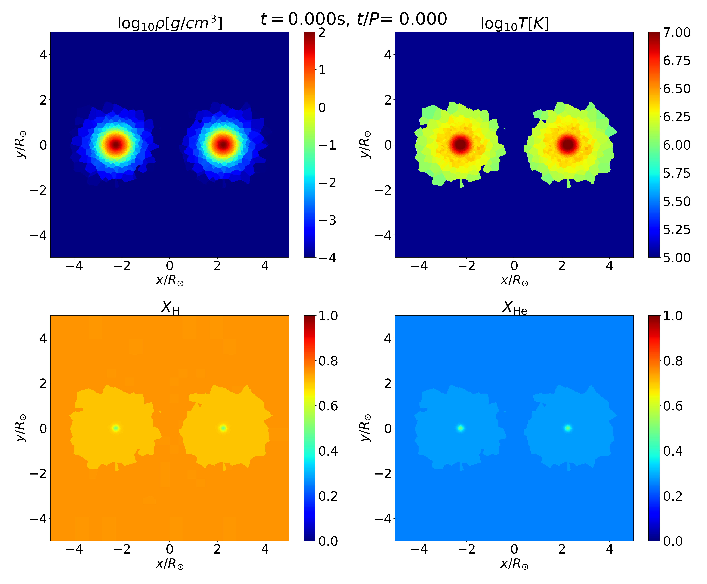
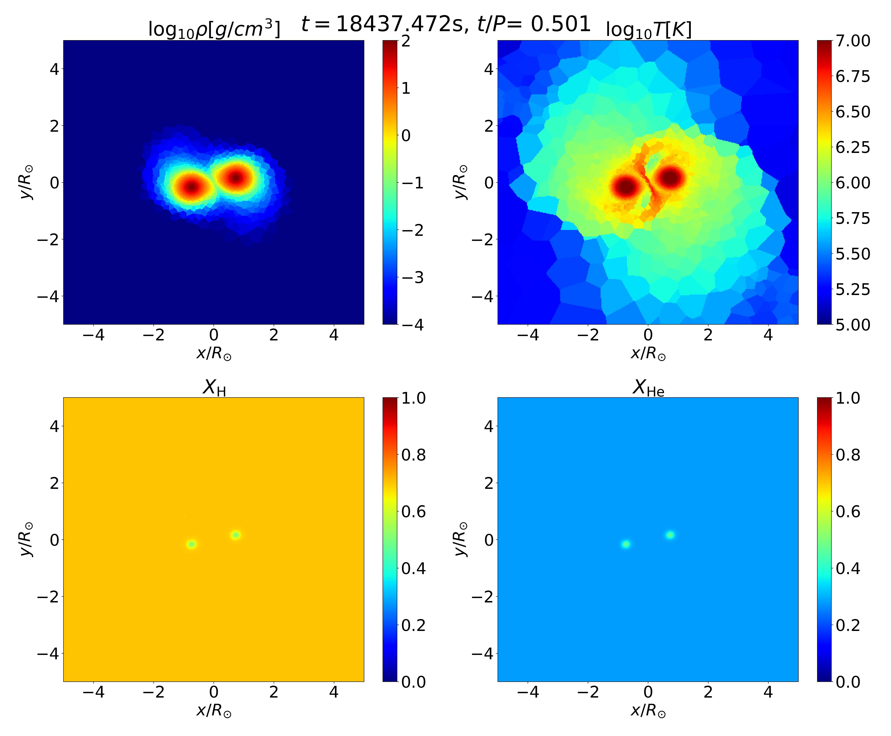
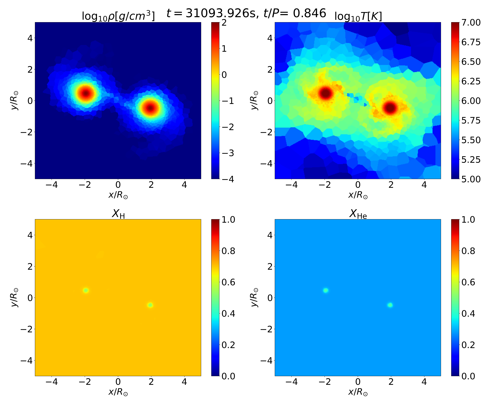

Session 7. Practice 2 - relaxation of binary star
1. Overview
A python script for making a binary star can be found in run/Binary_relaxation/Creating_IC. In the directory, you can find the following files,
$ helm_table.dat ic_binary.py module.py param_config_sample snapshot_binary.py species55.txt
Now we will create a binary consisting of two stars that we relaxed in the previous section
2. Creating 3D binary star
Like ic_MS.py, ic_binary.py is written such that it generates initial condition files and puts all the necessary files in a new directory authomatically. You just need to make sure that path_to_single_relaxed_star is properly set to one of the output files from the simulation for the single star relaxation.
$ path_to_single_relaxed_star = "../../Star_relaxation/MS_relaxation_1.0msun/output/snapshot_010.hdf5"
The semimajor axis and eccentricity of the binary are set with the following parameters,
$ ecc = 0.5
$ semi = 3.0 * unit_dist
With that, you can generate the initial condition files using the following command,
$ python3 ic_binary.py
then you can see the following (or similar) messages on display,
$ python3 ic_binary.py
$ [BINARY INFO]
$ m1 1.035e+00 Msun 1.035e+00 Msun
$ semimajor axis [rsun] 3.000
$ ecc 0.500
$ total particle 26376 + 26376 = 52752
$ 52752 particles found.
$ Building grid with 16 x 16 x 16 cells.
$ Created 3438 particles to fill grid.
$ 56190 particles found.
$ Building grid with 16 x 16 x 16 cells.
$ Created 2698 particles to fill grid.
$ 58888 particles found.
$ Building grid with 16 x 16 x 16 cells.
$ Created 3096 particles to fill grid.
$ Writing gadget file: IC.hdf5
$ Done.
$ move files to ../binary_relaxation_1.0Msol_1.0Msol_a3.0_e0.5
3. Compiling
As we did before, we first load the environment modules,
$ source /usr/common/appl/modules-tcl/init/sh
$ module purge
$ module load mpich/3.3.6
$ module load fftw-mpich/3.3.6
$ module load gsl
$ module load hdf5/1.8.18
and go to the top level of the AREPO directory (<path_to_AREPO>/AREPO/) and compile using the following line,
$ make CONFIG=./run/Binary_relaxation/binary_relaxation_1.0Msol_1.0Msol_a3.0_e0.5/Config.sh BUILD_DIR=./run/Binary_relaxation/binary_relaxation_1.0Msol_1.0Msol_a3.0_e0.5/build EXEC=./run/Binary_relaxation/binary_relaxation_1.0Msol_1.0Msol_a3.0_e0.5/Arepo
4. Running
Now we go to the stage directory (<path_to_AREPO>/AREPO/run/Binary_relaxation/binary_relaxation_1.0Msol_1.0Msol_a3.0_e0.5/) and run using the following command,
$ mpirun -n 10 ./Arepo param.txt
5. Analyzing
To execute the python script, use the command line,
$ python3 snapshot_binary.py
then, you will get a series of images, for example,
At t = 0
At pericenter
Near apocenter
